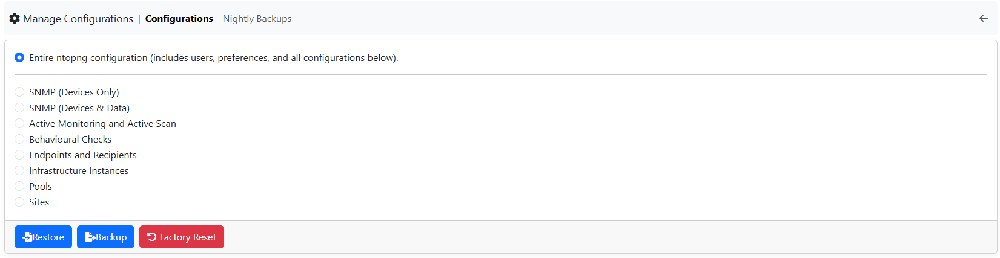

Конфигурации
ntopng предоставляет возможность резервного копирования своей конфигурации, чтобы иметь возможность восстановить ее в случае сбоя системы. сбоев и переустановок или клонировать его в другие системы, требующие той же конфигурации (например, в кластере или в развертывании с высокой доступностью), экономя много времени на копирование всех настроек вручную.
Через Интернет GUI можно экспортировать выбранные конфигурации, в том числе:
SNMP конфигурация
Конфигурация активного мониторинга
Проверяет конфигурацию
Конечные точки и получатели оповещений
Все пулы (сюда также будут включены все предыдущие пункты, так как это от них зависит)
или экспортируйте всю конфигурацию ntopng, которая включает в себя Пользователи и Предпочтения в дополнение ко всему выше пунктов. В обоих случаях создается небольшой файл JSON, содержащий конфигурацию.
Также можно импортировать обратно конфигурацию, которая была экспортирована ранее, предоставив файл JSON. Элементы конфигурации, содержащиеся в импортированной конфигурации, будут добавлены к тем, которые уже присутствуют в текущая конфигурация ntopng (например, конечная точка, уже настроенная в ntopng, если таковая имеется, не будет удалена при импорт дополнительных конечных точек).
Также возможен сброс конфигурации до заводских настроек. Это также полезно при импорте конфигурация и сохранение старой не требуется и нежелательна (например, при добавлении набора получателей и конечные точки без сохранения уже имеющихся).
Все это доступно из Настройки -> Конфигурации меню, как показано на рисунке ниже.

Страница управления конфигурациями
Каждую ночь ntopng автоматически создает резервную копию всей конфигурации приложения. Резервная копия не создается, если конфигурация не изменилась с предыдущего дня. В настоящее время сохраняются последние 7 резервных копий, а более старые автоматически удаляются. Вы можете загрузить резервную копию, используя меню «Загрузка» в столбцах «Действия». Эту резервную копию можно восстановить с помощью кнопки «Импорт» на главной странице конфигурации.

Страница резервного копирования конфигураций
Импорт пула через CSV
В дополнение к стандартному формату JSON пулы также можно импортировать с помощью файла CSV.
Доступ к диалоговому окну импорта
Чтобы импортировать участников пула хостов из файла CSV:
Перейдите к Настройки -> Конфигурации.
Выберите Бассейны кнопка радио.
Нажмите кнопку Импорт кнопку и выберите файл CSV.
Альтернативно, тот же диалог доступен из Бассейны -> Участники пула хостов страницу, нажав тот Импортировать хосты кнопка внизу страницы, которая открывает Конфигурации страница с тот Бассейны элемент предварительно выбран.
Примечание
Загруженный файл должен иметь .csv расширение (помимо файлов с расширением .json расширение
которые также поддерживаются).
Формат файла
Каждая строка файла CSV определяет назначение одного члена пула:
<ip_or_mac><separator><pool_name>
Поддерживаемые разделители: пробел, запятая (,) и точка с запятой (;). Все следующие эквивалентны
и действительны:
192.168.1.2/32@10 myPool
192.168.1.2/32@10,myPool
192.168.1.2/32@10;myPool
IP-адреса должно быть указано в обозначении CIDR с необязательным тегом VLAN:
x.y.z.k/p@v
где p длина префикса (например, 32 для одного хоста, 24 для подсети /24) и v есть
идентификатор VLAN. Тег VLAN не является обязательным: если он опущен, VLAN 0 предполагается. Следующие две записи
поэтому эквивалентно:
192.168.1.1/32;myPool
192.168.1.1/32@0;myPool
MAC-адреса должен быть указан в стандартном шестнадцатеричном формате, разделенном двоеточиями:
AA:BB:CC:DD:EE:FF;myPool
Пустые строки и строки, начинающиеся с # игнорируются и могут использоваться в качестве комментариев. Может быть несколько участников
назначаются одному и тому же пулу путем повторения имени пула в разных строках. Члены, принадлежащие к разным
пулы можно свободно смешивать в одном файле.
Полный пример файла:
# Office hosts
192.168.1.10/32 OfficePool
192.168.1.0/24 OfficePool
# Guest devices
192.168.2.0/24;GuestPool
AA:BB:CC:DD:EE:FF,GuestPool
# VLAN-tagged host (VLAN 10)
10.0.0.5/32@10 ServerPool
Объединить поведение
CSV-импорт добавляет участников в пулы. Если пул с соответствующим именем уже существует, импортированный члены объединены в него. Если пула с таким именем не существует, создается новый. Существующие участники и пулы, не упомянутые в CSV-файле, не удаляются.
Импорт/экспорт через API
Конфигурацию также можно импортировать и экспортировать программно через API. Ниже приведен пример, в котором используются REST API для экспорта, а затем импорта глобальной конфигурации ntopng.
Экспорт глобальной конфигурации ntopng в локальный файл JSON all_config.json от хоста office, пользователь admin (идентифицируется паролем admin) может вызвать следующую конечную точку
$ curl -u admin:admin1 "http://office:3000/lua/rest/v2/export/all/config.lua?download=1" > all_config.json
Чтобы импортировать конфигурацию, содержимое all_config.json должно быть обработано POST как значение строки JSON до следующей конечной точки:
$ curl -uadmin:admin1 -H "Content-Type: application/x-www-form-urlencoded" --data-urlencode "JSON=`cat all_config.json`" "http://office:3000/lua/rest/v2/import/all/config.lua"
Успешный POST подтверждается следующим сообщением:
{"rc":0,"rc_str":"OK","rc_str_hr":"Success","rsp":[]}
После импорта глобальной конфигурации требуется перезапуск ntopng.